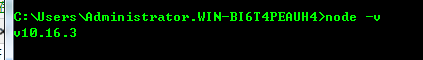
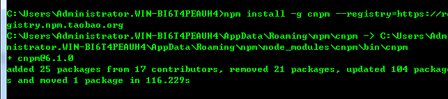
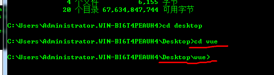
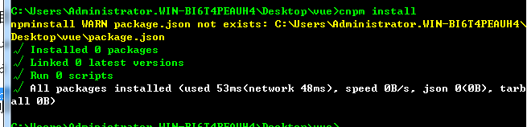
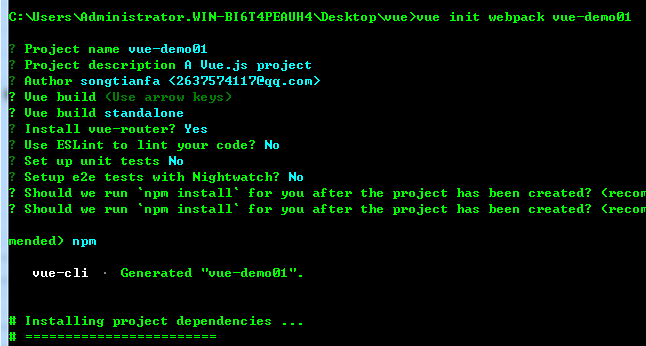
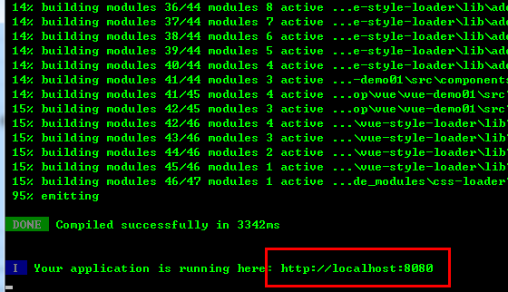
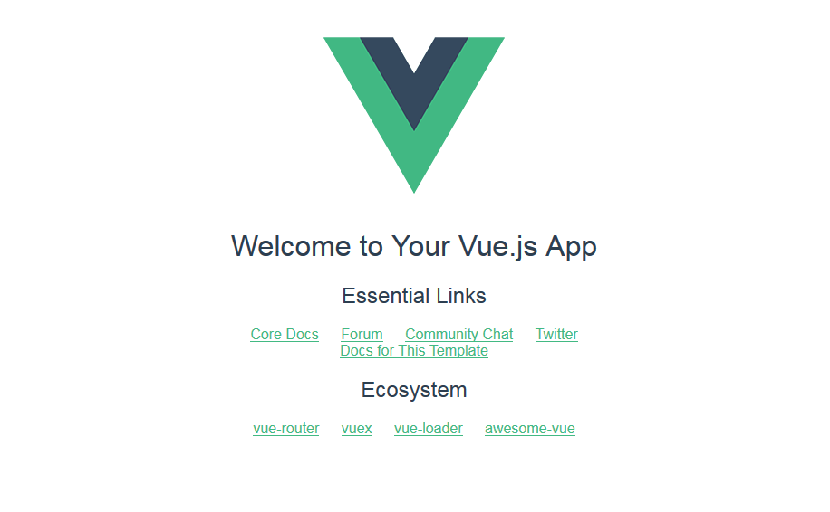

Vue.js是一套构建用户界面的渐进式框架。与其他重量级框架不同的是，Vue 采用自底向上增量开发的设计。Vue 的核心库只关注视图层，并且非常容易学习，非常容易与其它库或已有项目整合。另一方面，Vue 完全有能力驱动采用单文件组件和Vue生态系统支持的库开发的复杂单页应用。
那么在windows系统下如何安装vue环境呢?
1.安装node.js，vue要基于node开发，安装好后输入 node -v，查看版本

2.安装cnpm命令管理工具，一般用淘宝的：npm install -g cnpm --registry=https://registry.npm.taobao.org

3.搭建vue的开发环境 ，安装vue的脚手架工具（进入vue目录）

npm install --global vue-cli

4、创建项目(必须cd到对应的一个项目里面)
vue init webpack vue-demo01

cd vue-demo01进入项目
5、运行项目：npm run dev

6.浏览器查看结果 localhost:8080

Vue.js 自身不是一个全能框架——它只聚焦于视图层。非常容易与其它库或已有项目整合。另一方面，在与相关工具和支持库一起使用时，Vue.js 也能完美地驱动复杂的单页应用。